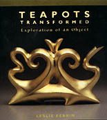

| Teapots Transformed
Leslie Ferrin's recent publication Teapots Transformed, Exploration
of an Object is a tour-de-force of contemporary teapot design.
A beautifully crafted 128 page, full-color book, Teapots Transformed
is written from the cognizant point of view of a gallery director
specializing in the teapot medium, as Ferrin does at Ferrin Gallery
in New York. While concentrating heavily on the contemporary American
teapot, overseas artists are also featured, inasmuch as they are
represented in North American galleries. Despite this smattering
of international artists, the book could rightly be subtitled "The
Contemporary American Teapot".Refreshingly devoid of overbearing
background text, this work includes about a dozen pages of explanatory
notes, which briefly touch upon the history of the teapot, the teapot
as an American cultural item and the rise of individual expression
and the contemporary American teapot, not to mention the teapot
as a collectors item. Otherwise, Ferrin let's the images from 117
teapot artists speak for themselves. The photography is of the highest
standard and is supported by a beautiful book design and high print
quality.
The
main pictorial section of the book takes a look at teapots from
American studio potteries, the influence of Yixing, sculptural and
figurative teapots and the teapot as the object of conceptual art.
Many familiar names meet our eyes in these pages: Robert Arneson,
Dorothy Haffner, Richard Notkin and Adrian Saxe, to randomly name
just a few. There are also a number of lesser known ceramists as
well as artists working in metal and other media.While in no way
trying to present a comprehensive history of the subject matter,
Ferrin presents us with a wonderful book on the contemporary American
teapot, which is rounded off nicely with a small bibliography of
suggested reading.
Further Reading: Teapots
Transformed - Exploration of an Object
More Reviews
|